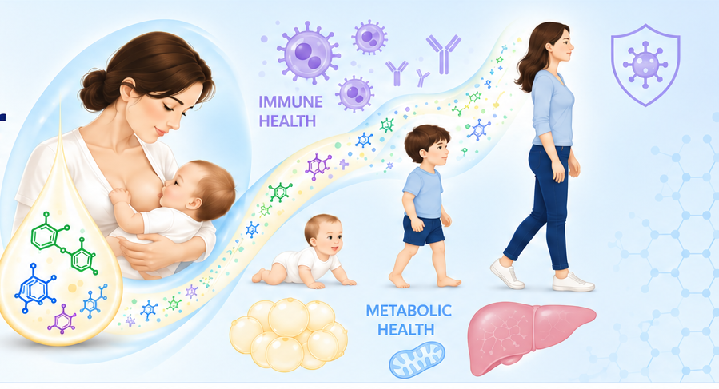

◉
Neonatal Immunity
How maternal signals and the early microbiome shape antiviral defenses in early life.
Learn more →
How maternal signals and the early microbiome shape antiviral defenses in early life.
Learn more →How milk-borne bile acids act as developmental signals that influence immunity, growth, and metabolism.
Learn more →How early-life exposures influence tissue development and lifelong metabolic health.
Learn more →Maternal diet–milk bile acids program offspring adiposity.
Maternal microbial metabolites and neonatal antiviral immunity.
Excited to have you join the lab.